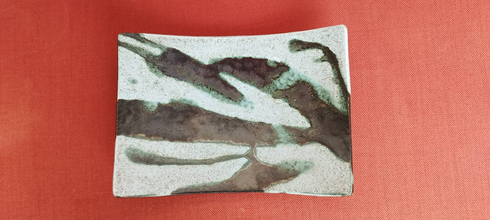
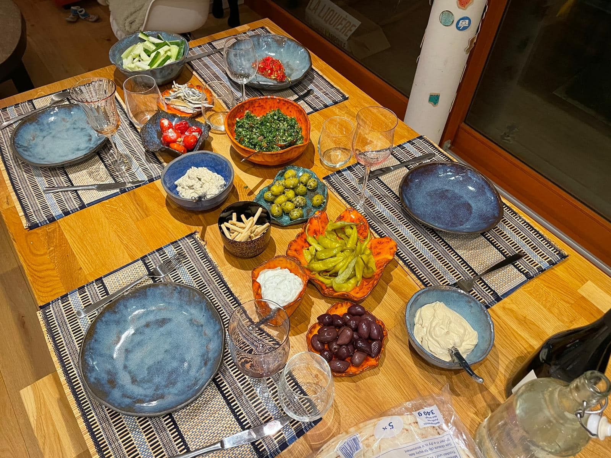
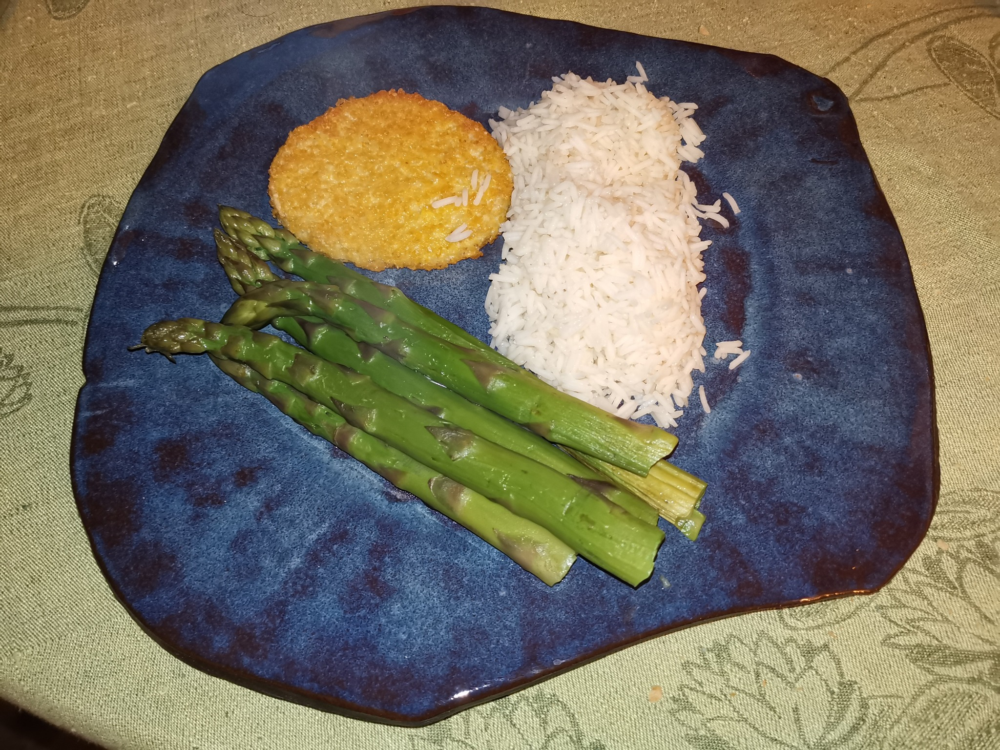
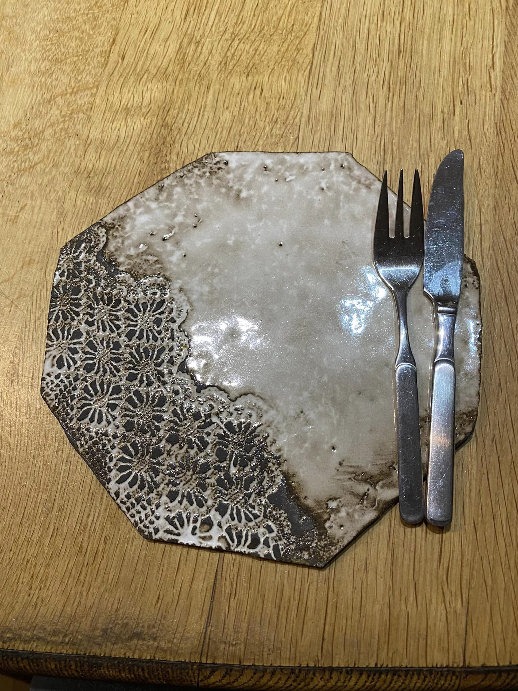
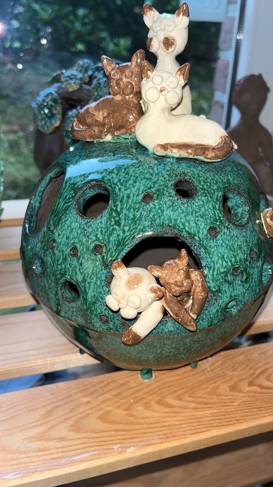
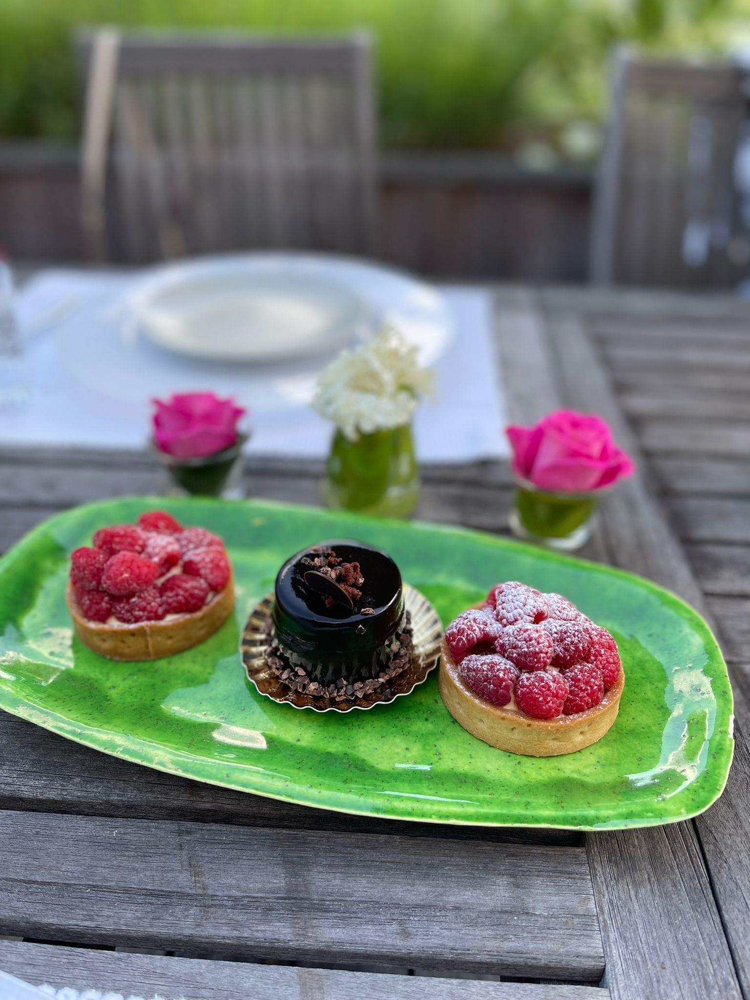
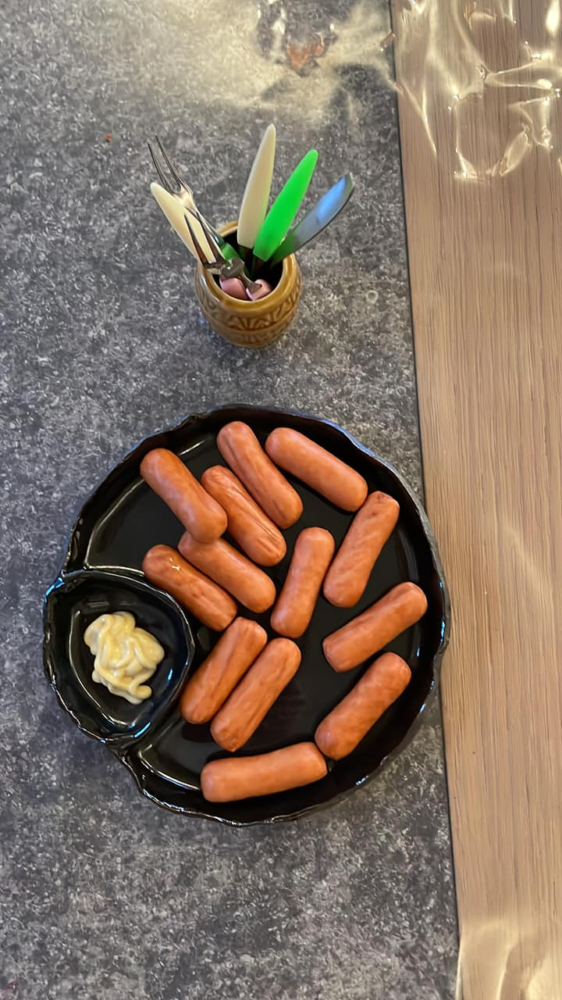
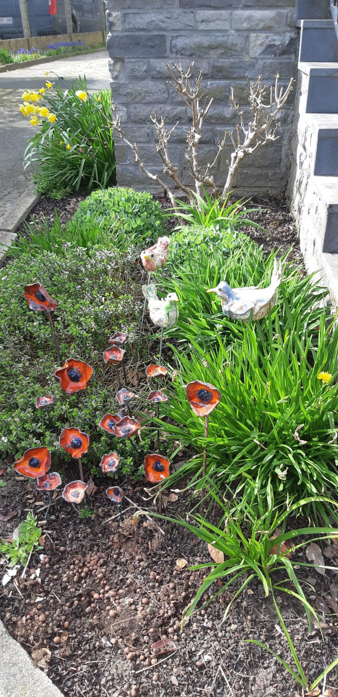
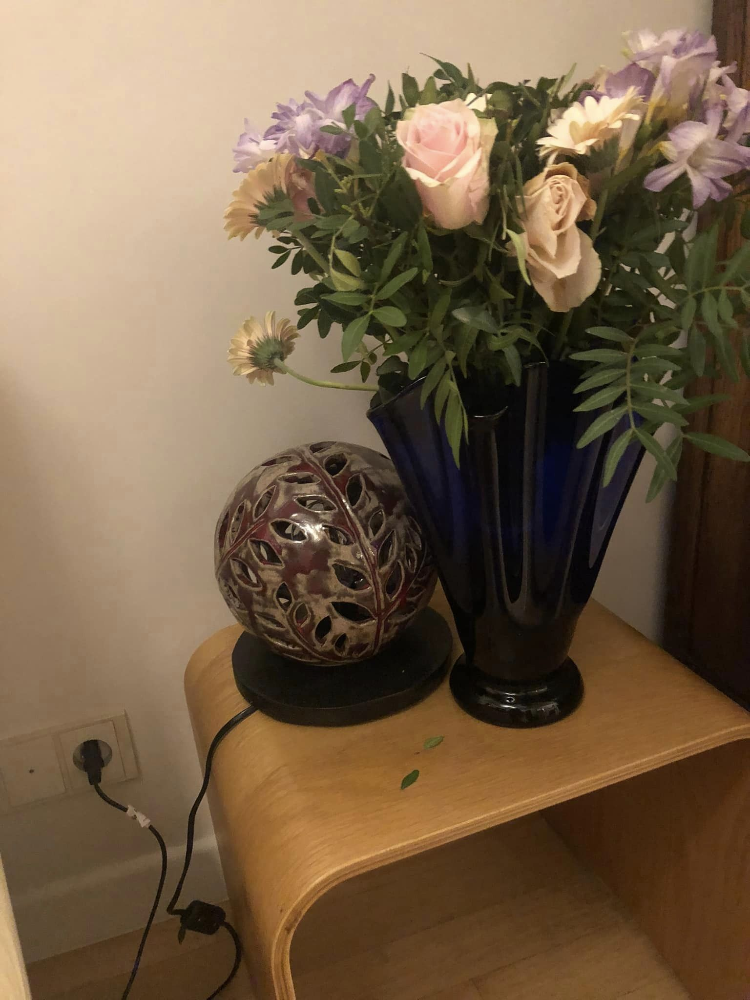
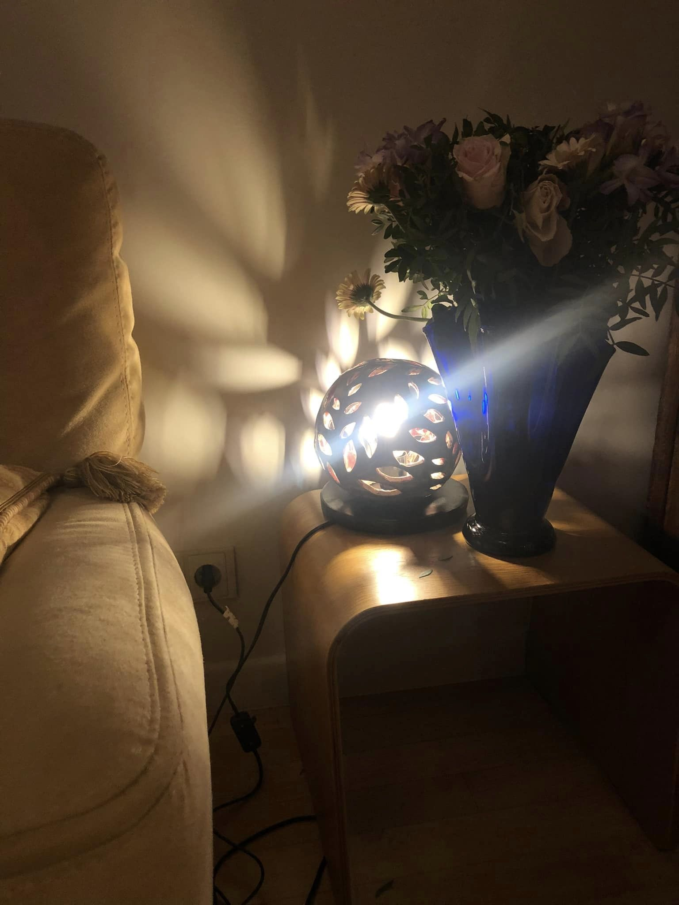

"J'adore aller à l'atelier de Patricia parce que non seulement l'ambiance est agréable, mais elle l'est encore plus. Toujours positive et prête à aider celleux qui en ont besoin. Sans compter les terres et émaux magnifiques ! -- Melody"

A propos
L'Atelier 71 se trouve à Rixensart. C'est un petit atelier pour 5-6 personnes. Il est dirigé par Patricia qui pratique la poterie depuis de nombreuses années. Précédemment active à l'atelier de la Triskel à Genval, elle a décidé d'ouvrir son propre atelier lorsque celui-ci a fermé ses portes.
Réalisations de nos créatrices









Tarifs et horaires
La séance de céramique dure 2h30.
L'atelier se fait le lundi et vendredi de 10h à 12h30 et le vendredi soir de 16h30 à 19h.
| Séance | 30€ (émaux et cuissons compris) |
| Cuisson | Four 1/4 plein : 15€ |
| de créations extérieures | Four mi-plein : 20€ |
| Four plein : 40€ | |
| Terre | Entre 9 et 20€ |